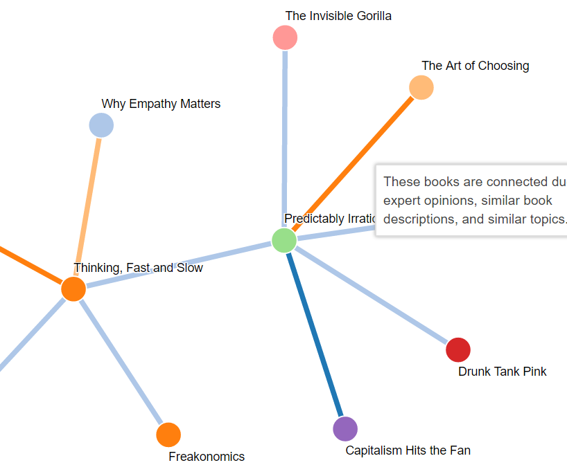
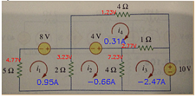

Miscellaneous
Some systems I've built
|  | Project Alexandria: Book Recommendation and Exploration Engine UT Senior Design Project, Advisor: Constantine Caramanis A team and I spent a year building a book recommendation & exploration engine that we like to think of it as "Pandora for Books." A user can simply enter a book or author that they like, and the site will display other books and tell them why they're related. Users can then click on books and get more recommendations. We have over a million books in the database. We used natural language processing and machine learning techniques to identify why books are related. The team has partnered with an online book seller, and so users can purchase books directly from the site if they wish to support us. The site is available at projectalexandria.net. |
|
|
Roomba-Sized Autonomous Vehicle Racing UT Austin 445M: Real-Time Operating Systems For a class capstone project, we built and raced an autonomous roomba sized robot. The team built every component of the robot: the motor circuitry, the operating system, the sensor circuitry, and the PID controller. At the end of the project, we raced against other teams in the class and won the class competition. A video can be found here. I wrote a blog post about what I learned from the project. |
|  | CircuitSnap, Automatic Circuit Solver UT Austin EE371R: Digital Image and Video Processing We built a tool that, given a picture of a resistor-network circuit from a textbook, overlays the voltage across each resistor and current around each mesh. It was built using Python and OpenCV. The code can be found on github. Our paper details the project. |
| UT Library System Android Application I developed an Android application to interface with the UT Library system. The system securely connected with the online library system. It allowed students to view their checked out books, reserve study rooms, and search the library catalogue. It included an indoors map of each of the libraries on the UT campus. The application is unreleased due to copyright issues. The code is available on github. |